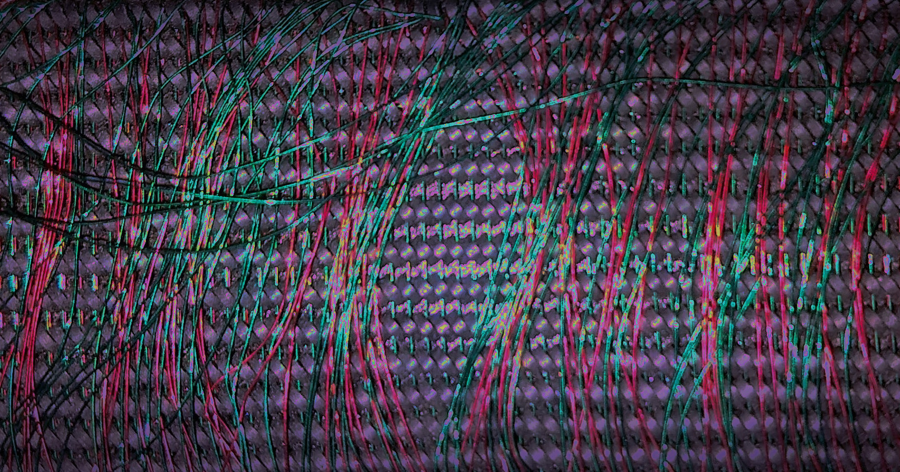

Organizers
Program Committee
In 2026, LIMITS is organized by Christoph Becker, Daniel Pargman and Oliver Bates. More soon!
Background Photo
The background photo for LIMITS 2026 by Jan Tobias Muehlberg is licensed under CC BY 4.0


12th Workshop on Computing within Limits
June 23rd-25th 2026 (Online)
Background photo: A close-up picture of a
module of magnetic core memory from around 1960. Toroids are
aligned in a grid and many red and green wires, drive lines, are visible.*
LIMITS concerns the role of computing in human societies situated in a world of planetary boundaries and limits, such as limits of extractive logics, limits to a biosphere’s ability to recover, limits to our knowledge, or limits of technological solutions to societal issues. As an interdisciplinary group of researchers, practitioners, and scholars, we seek to reshape and orient the broader computing research agenda, grounded by an awareness that contemporary computing research is embedded in finite socio-ecological conditions and must reckon with with ecological limits in general, and climate- and climate justice-related limits in particular. LIMITS 2026 solicits submissions that move us closer towards computing that supports ecological and just futures for diverse human and non-human lifeforms and thriving biospheres.
forthcoming (and free)
To engage with the LIMITS comunity, please subscribe to our mailing list by sending an email to limits+subscribe@googlegroups.com.
Since 2015, the yearly LIMITS workshop series concerns the role of computing in human societies situated in a world with planetary boundaries and corresponding limits [Nardi et al. 2018]. As an interdisciplinary group of researchers, practitioners, and scholars, this community seeks to reshape the computing research agenda, grounded by an awareness that contemporary computing research is intertwined with ecological limits. LIMITS publishes submissions that move us closer towards computing that supports ecological and just futures for diverse human and non-human lifeforms and thriving biospheres.
LIMITS is a place for a wide range of perspectives and approaches. We welcome contributions from anyone including researchers, engineers, designers, and artists who are exploring computing in ways that engage with pressing ecological and social issues and crises. LIMITS strives to be a place for envisioning technologies and futures ‘otherwise’: a place for work that considers how visions and frameworks of pluriversal design, degrowth and post-growth affect computing and asks how computing can grapple with polycrises, metacrisis, collapse, colonialism and decolonization, equity, justice, and transition design.
For 2026, we are calling for
A link to the submission system will be provided here in the coming days.
Papers should adhere to the following guidelines:
samples/sample-sigconf.texfrom the downloaded archive as a base for your paper, and modify the header as follows:
%% Rights management information. This information is sent to you
%% when you complete the rights form. These commands have SAMPLE
%% values in them; it is your responsibility as an author to replace
%% the commands and values with those provided to you when you
%% complete the rights form.
\setcopyright{none}
\settopmatter{printacmref=false}
\acmDOI{}
\acmISBN{}
%% These commands are for a PROCEEDINGS abstract or paper.
\acmConference[LIMITS '26]{12th Workshop on Computing within Limits}{June 23--25, 2026}{Online}
You can further remove the CCS concepts from your
submission by commenting out the CCSXML and
\ccsdesc lines.
Reviewing will be non-blind; authors should include their names and contact information and reviews will include reviewer names.
All papers will be made freely available on the workshop website and post-workshop proceedings will be published on arXiv.org. Copyright will remain with the authors.
In 2026, LIMITS is organized by Christoph Becker, Daniel Pargman and Oliver Bates. More soon!
The background photo for LIMITS 2026 by Jan Tobias Muehlberg is licensed under CC BY 4.0

{kind=link}